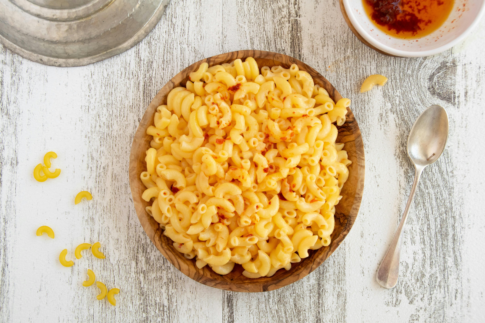

Mac and Cheese

Description
A delicious mac and cheese recipe with bacon.
- 1 3/4 cups Macaroni, uncooked
- 3 Tbls of Butter or Margarine
- 2 Tbls of Flour
- 2 Cups of Milk, or as needed
- 2 Cups Kraft Shredded Sharp Cheedar Cheese, divided
- 3 Slices of Oscar Mayer Center Cut Bacon, cooked, crumbled
Steps
- Preheat the oven to 350 degrees F (175 degrees C).
- Bring a large pot of lightly salted water to a boil. Cook elbow macaroni in the boiling water, stirring occasionally, until tender yet firm to the bite, about 8 minutes. Drain and keep warm.
- At the same time, melt butter in a large saucepan over low heat. Whisk in flour and stir until mixture becomes paste-like and bubbly, about 2 minutes. Gradually whisk in milk and bring to a simmer over medium heat. Cook and stir until the mixture is thick and smooth, 3 to 5 minutes. Stir in 1 1/2 cups Cheddar and cook until melted, about 5 minutes.
- Add macaroni and bacon to the saucepan; gently stir to combine with sauce. Add additional milk only if needed to evenly coat the pasta. Transfer to a 1 1/2-quart casserole dish; sprinkle remaining 1/2 cup Cheddar over top.
- Bake in the preheated oven until hot and bubbly, about 20 minutes.